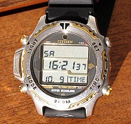
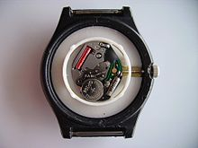

Movimiento de cuarzo
El reloj de cuarzo o reloj de precto es un reloj electrónico, analógico o digital que se caracteriza por poseer una pieza de cuarzo que sirve para generar los impulsos necesarios a intervalos regulares que permitirán la medición del tiempo. El cuarzo se talla habitualmente en forma de lámina y se introduce en un cilindro metálico; este tiene por función la protección del mineral. Para que vibre el cristal de cuarzo, debe ser alimentado por un campo eléctrico oscilante generado por un circuito electrónico.
 
Para más información: